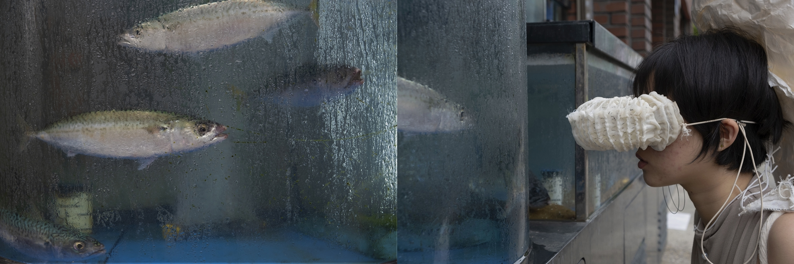
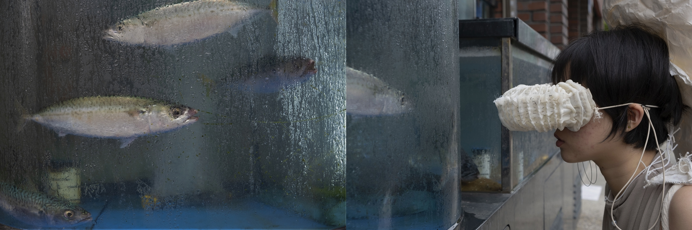

냄새차단장치, 가변크기, 거즈면, 면 고무줄, 철사, 면사, 2019.
소리차단장치, 가변크기, 라텍스, 철사, 면사, 이어플러그, 2019.
이미지차단장치, 가변크기, 오간자천, 용수철, 실, 고무줄, 2019.
감각차단장치, 47×49×168cm, 종이, 밧줄, 2019
내부순환도로 고가 밑 공터에 쓰레기로 집적된 노숙자 터를 관찰한다. 그곳은 누구도 닿지 못하게 하여 스스로를 자극으로부터 고립시킨다. 그 장소가 작동하는 바에 공감하여 직면한 자극 상황에서 도망칠 수 있는, 물리적인 자극을 차단하는 각 장치를 만들었다.